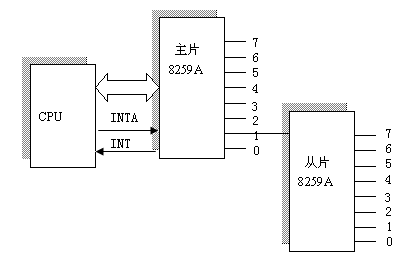
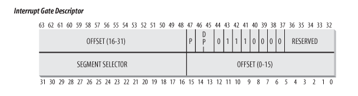
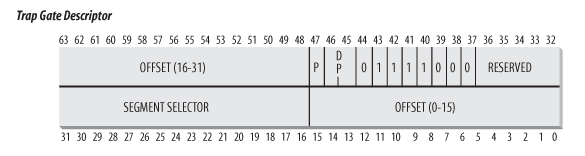

Linux Kernel: Interrupt
Table of Contents
1 Linux Kernel: Interrupt
1.1 Overview
Interrupt, 按照 Intel 的分类, 主要分为两类:
Interrupt
包括可屏蔽中断 (maskable interrupt) 与不可屏蔽中断(non-maskable interrupt, NMI), interrupt 是指由 IO 设备或内部 timer 产生的, 也称为异步中断 (asynchronous) 或外部中断, 后面统称为 IO interrupt
interrupt 发生时中断保存的 eip 是下一条 eip
Exception
除了 IO interrupt 之外的 interrupt 称为 exception, 这一类一般是由 CPU 主动产生的 (同步的), 也称为同步中断, 内部中断. 例如除零错, page fault, 断点, 浮点数异常等,另外还包括 int 指令产生的 interrupt, 关于 exception, 在 已经以 syscall 为例进行描述, 为避免混淆, 后面的内容主要讨论 IO interrupt
Exception 内部又细分为 fault, trap, abort, 分类的主要依据是 "exception 恢复后从哪里开始? 当前 eip 还是下一条 eip"
fault
fault 是可以恢复的 exception, 所以中断发生时保存的 eip 是当前导致 fault 的 eip (而不是下一条 eip), 以便 fault 恢复后可以再次执行同一条指令, 典型的 fault 是 page fault
trap
trap 的主要作用是 debug 相关, 它保存的 eip 是当前导致 trap 的下一条 eip
abort
abort 是不可恢复的, 中断保存的 eip 并不一定是一个有效的值
exception 与 interrupt 的相似性主要体现在它们共用同一个中断向量表 (Interrupt Descriptor Table, IDT). IDT 一共 256 项, 其中前 32 项是留给 exception 和 NMI 使用, 32 项以后的部分留到 IO interrupt 使用 (第 0x80 项是例外, 它是留给 syscall 的).
IO 设备都通过它的 IRQ line (Interrupt ReQuest line) 连接到一个称为可编程中断控制器 (PIC) 的某个输入引脚上, PIC 的工作大致是:
- PIC 会监视输入引脚上的信号, 如果发现某个引脚上有信号, 说明对应的 IRQ line 被 raised
- 这时它会将引脚转换为一个数称为中断向量 (Interrupt Vector) 并把这个向量放在 PIC 的一个输出端口上等待 CPU 来读. 默认情况下 interrupt_vector = irq + 32, 即 irq 0 被 raise 时, PIC 产生的中断向量为 32
- 同时 PIC 给 CPU 的 INTR 引脚发送一个信号, 告诉 CPU 有中断发生.
- CPU 从 PIC 的 IO 端口读取中断向量, 然后给 PIC 的一个输入端口发送一个 ACK, PIC 随后会清除 INTR 并回到 step 1
CPU 拿到中断向量后, 会根据中断向量查找 IDT (中断向量表) 以找到 interrupt 对应的中断处理函数 (interrupt handler), CPU 首先会做一些检查, 然后保存上下文, 最后跳转到 interrupt handler 去执行
interrupt handler 需要尽可能快的完成操作, 因此 linux 把 interrupt handler 的功能分为两部分: top half 与 bottom half. top half 是指那些必须在 interrupt handler 中执行的部分, bottom half 是那些可以被延后处理的部分.
实现 bottom half 有几种不同的机制: softirq, tasklet, work queue
1.2 PIC
1.2.1 8259a
IO interrupt 的起点是 PIC, 传统的 PIC 是 intel 8259a
它的外观如下:
- 8 个中断输入引脚: IRQ0 ~ IRQ7, 与外设和其它 8259a 连接
- 一个中断输出引脚 INT, 与 CPU 的 INTR 连接
- 一个中断回复引脚 INTA, 与 CPU 连接
- 8 个数据输出引脚 D0 ~ D7, 用来与 CPU 沟通中断向量
一个 8259a 可以连接 8 个 IRQ line, 两个 8259a 可以通过级联的方式支持 15 个 IRQ line.
最多可以将 8 个 slave 8259a 连接在一个 master 8259a 上, 构成一个支持 64 个 IRQ line 的 PIC
8259a 内部有三个寄存器: IMR, IRR, ISR, 其中 IMR 用来控制哪些 IRQ 被屏蔽, 但 IMR 是只写的 … 所以 kernel 需要自己记住 cached_irq_mask

1.2.1.1 中断屏蔽
通过向 8259a 的 IMR 写入特定的 irq_mask, 可以屏蔽某些 IRQ line, 具体的, linux 通过 mask_and_ack_8259A 函数来屏蔽特定的 IRQ line.
除了通过 PIC 来屏蔽特定的 IRQ line, 还可以通过 cli 指令来禁用当前 CPU 的 INTR 从而使当前 CPU 禁用所有 IRQ line, 需要注意 cli 是针对当前 CPU 而不是针对 PIC: 其它 CPU 还是可以从 PIC 收到中断请求
后面 interrupt handler 部分可以看到 cli 与 irq mask 的应用
1.2.2 APIC
8259a 涉及到多核时无法工作: 一个 8259a 的 INTR 如何接到多个 CPU 对应的引脚?
Intel 从 Pentium III 开始推出 IO APIC 代替 8259a.
每个 CPU 都有一个 local APIC, 这些 local APIC 通过 ICC 总线与 IO APIC 连接, IO APIC 与外设连接.
IO APIC 包括一个 Interrupt Redirection Table 和一个通过 ICC bus 与 local APIC 通信的模块, 以便能将外设的中断请求 "route" 到相应的 local APIC, 从而解决多核的问题. 一般情况下 kernel 不需要关心 IRQ 如何分配给各个 CPU, 但 APIC 提供了一些可编程的寄存器使 kernel 可以控制 IRQ 的分配以完成 IRQ balancing
1.3 IDT
CPU 从 PIC 得到中断向量后, 第一步就是从 IDT 中找到对应的中断描述符 (interrupt descriptor)
IDT 包含 256 项, 每一项是一个大小为 8 字节的 interrupt descriptor, 所以 IDT 的大小为 256 * 8 = 2K
CPU 可以通过 idtr 找到 IDT 的基址, kernel 可以通过 lidt 给 idtr 赋值, 但 idtr 中并非直接就是 IDT 的基址: idtr 中的地址中保存着一个二元组 (idt_size, IDT), 所以这个二元组的第二项才是 IDT 的基址
1.3.1 Interrupt Descriptor
IDT 中的元素称为 Interrupt Descriptor, 大小为 8 字节. 这个 descriptor 的主要成员是 interrupt handler 的地址, 但还包括其它一些内容.
根据 descriptor 对应的 interrupt 类型 (IO interrupt, exception, trap …), 有几种不同的 interrupt descriptor, 它们的格式基本相同, 但有个别 flag 有些差别
Interrupt Gate

- OFFSET 为对应的 interrupt handler 的地址 (共 32 bits)
- SEGMENT SELECTOR 是指执行这个 interrupt handler 时硬件需要将 CS 需要切换到这个 selector 指示的 segment, linux 下所有 interrupt descriptor 的这个字段都为 __KERNEL_CS. 由于 cs 即 CPL, 所以 SEGMENT SELECTOR 代表的实际上是 interrupt handler 运行时将处的 running level
- DPL 是指运行这个 interrupt handler 需的 privilege level. 当 interrupt (或 exception) 发生时, 硬件会检查 CPL 与这个 DPL 是否一致, 避免 user mode 发起 int 0x2 这种非法的调用
Interrupt gate 与 Trap gate 的区别仅仅是第 40 bit 的值: Interrupt gate 的这个值被置位, 表示 CPU 在执行 interrupt handler 时需要 clear EFLAGS 的 IF 位, 即硬件会保证关中断
Trap Gate

Trap gate 与 interrupt gate 基本相同, 但硬件不会主动关中断
1.3.2 IDT 初始化
1.3.2.1 idtr 的初始化
cpu_init: __asm__ __volatile__("lidt %0" : : "m" (idt_descr)); idt_descr: // IDT_ENTRIES 为 256 .word IDT_ENTRIES*8-1 .long idt_table
1.3.2.2 idt_table 的初始化
- setup_idt
setup_idt 是最初的初始化阶段, idt_table 中的每一项都被初始化为相同中的 descriptor:
- handler 为 ignore_int
- SEGMENT DESCRIPTOR 为 __KERNEL_CS
- DPL 为 0
这个 ignore_int 实际上只是打印一句 "Unknown interrupt…" 并调用 iret 从中断返回
setup_idt: // interrupt handler 为 ignore_int lea ignore_int,%edx // selector = 0x0010 = cs movl $(__KERNEL_CS << 16),%eax movw %dx,%ax // interrupt gate: dpl=0, present movw $0x8E00,%dx // 将 idt_table 的每一项 (共 256 项) 都设置为前面构造的 descriptor lea idt_table,%edi mov $256,%ecx rp_sidt: movl %eax,(%edi) movl %edx,4(%edi) addl $8,%edi dec %ecx jne rp_sidt ret
- trap_init
trap_init 是 idt_table 初始化的第二个阶段, exception 对应的 descriptor 在这时被初始化
start_kernel: trap_init() set_trap_gate(0,÷_error); set_intr_gate(1,&debug); set_intr_gate(2,&nmi); set_system_intr_gate(3, &int3); set_system_gate(4,&overflow); set_system_gate(5,&bounds); set_trap_gate(6,&invalid_op); set_trap_gate(7,&device_not_available); set_task_gate(8,GDT_ENTRY_DOUBLEFAULT_TSS); set_trap_gate(9,&coprocessor_segment_overrun); set_trap_gate(10,&invalid_TSS); set_trap_gate(11,&segment_not_present); set_trap_gate(12,&stack_segment); set_trap_gate(13,&general_protection); set_intr_gate(14,&page_fault); set_trap_gate(15,&spurious_interrupt_bug); set_trap_gate(16,&coprocessor_error); set_trap_gate(17,&alignment_check); set_trap_gate(19,&simd_coprocessor_error); set_system_gate(SYSCALL_VECTOR,&system_call);
这里设置的各种 gate 中比较重要和有代表性的是:
- set_intr_gate(14,&page_fault)
- set_system_gate(SYSCALL_VECTOR,&system_call)
- set_intr_gate
set_intr_gate: // 1. 14 表示 type, 对应 gate descriptor 的 43~40 bit, 分别为 1110, 表 // 示 clear IF // 2. 0 表示 DPL 为 0 // 3. __KERNEL_CS 表示 SEGMENT SELECTOR 为 __KERNEL_CS _set_gate(idt_table+n,14,0,addr,__KERNEL_CS);
- set_trap_gate
set_trap_gate: // 与 set_intr_gate 基本相同, 除了这里的 flag 为 15 (1111), 表示不 // clear IF _set_gate(idt_table+n,15,0,addr,__KERNEL_CS);
- set_system_gate
set_system_gate: // 与 set_trap_gate 不同的一点是其 DPL 为 3, 表示 user mode 也可以发起 // 这个 interrupt: 实际上 syscall 就是通过 set_system_gate 设置的 _set_gate(idt_table+n,15,3,addr,__KERNEL_CS);
- init_IRQ
init_IRQ 负责将 idt_table 中剩余的部分初始化为 do_IRQ, do_IRQ 是所有 IO interrupt 的统一的 interrupt handler
start_kernel: init_IRQ() for (i = 0; i < (NR_VECTORS - FIRST_EXTERNAL_VECTOR); i++): int vector = FIRST_EXTERNAL_VECTOR + i; if (i >= NR_IRQS): break; if (vector != SYSCALL_VECTOR): // IO interrupt 的 gate descriptor 为 interrupt[i] set_intr_gate(vector, interrupt[i]); ENTRY(interrupt): vector=0 ENTRY(irq_entries_start) // 这里的 .rept 和后面的 .endr 以及 vector=vector+1 三条伪指令导致 // interrupt 数组中被填充了 NR_IRQS 项 .rept NR_IRQS ALIGN // 因为 irq 一共 256 个 ([0..255]), 所以这里 $vector-256 导致 push 到 // 栈上的值为[-256 .. -1], 这值实际上对应于 pt_regs->orig_eax. 在 // do_IRQ 时通过 pt_regs->orig_eax & 0xff 取得了 irq 号, 由于负数是通 // 过补码表示的,这个 & 操作与最原始的 $vector 刚好是一样的. // // 以 $vector 为 0 为例, orig_eax 为 -256, 其补码为 10000 0000, 与 // 0xff 与完还是 0 // // 对 irq 来说 pt_regs->orig_eax 是一个负数, 可以很好的与 syscall 的 // pt_regs->orig_eax 区分... 1: pushl $vector-256 jmp common_interrupt .data .long 1b .text vector=vector+1 .endr common_interrupt: SAVE_ALL movl %esp,%eax call do_IRQ jmp ret_from_intr
1.4 ret_from_intr
关于 interrupt 进入与返回的部分参考之前的 部分, 这里仅仅描述 interrupt 返回时的操作, 这一部分和 Creating Processes 时使用的 syscall_exit_work 差不多.
ret_from_intr: GET_THREAD_INFO(%ebp) movl EFLAGS(%esp), %eax movb CS(%esp), %al testl $(VM_MASK | 3), %eax // 根据 regs->ecs 的值可以确定进入中断时是否是在 kernel mode, 如果是, // 则通过 resume_kernel 返回到 kernel space, 否则通过 resume_userspace // 返回到 user space jz resume_kernel // fall through resume_userspace: cli movl TI_flags(%ebp), %ecx andl $_TIF_WORK_MASK, %ecx // 是否有 pending work? 例如 NEED_RESCHED, pending signal. // work_pending 参考 creating processes 中的描述 jne work_pending jmp restore_all // 若 kernel 打开了内核抢占 (kernel preemption), 则 resume_kernel 时, // 若 preempt_count 为零 (当前不是在执行 softirq 或 hardirq 且 preempt // 没有 disable), 则会尝试 reschedule. 若 preempt_count 不为零, 则不会 // 考虑 reschedule, 因为这会导致被当前 interrupt 打断的 kernel path 也 // 被睡眠,这并不合理... // // 若 kernel 没有打开 kernel preemption, 则 resume_kernel 直接就是一个简 // 单的 restore_all // // resume_kernel 与 resume_userspace 的区别是: // // 1. 前者并不会处理 pending signal // // 2. 若没有配置 kernel preemption, 则前者也不会处理 pending schedule resume_kernel: cli cmpl $0,TI_preempt_count(%ebp) # non-zero preempt_count ? jnz restore_all need_resched: movl TI_flags(%ebp), %ecx # need_resched set ? testb $_TIF_NEED_RESCHED, %cl jz restore_all testl $IF_MASK,EFLAGS(%esp) jz restore_all call preempt_schedule_irq jmp need_resched
关于内核抢占与 preempt_count, 参考
1.5 do_IRQ
init_IRQ 之后, 和 IO interrupt 处理相关的问题就可以从 do_IRQ 开始, 而不必再关注更底层的 gate 和 interrupt handler.
do_IRQ 需要考虑的几个问题:
- 由于所有 IO interrupt 都使用 do_IRQ 做为其 interrupt handler, 所以 do_IRQ 需要能区分出不同的中断向量并能调用不同的 Interrupt Service Routing (ISR)
- 由于 PIC 的 IRQ 有限而外设数量却在不断增加, 类型也在变化, 导致:
- 多个设备的 IRQ line 可能会通过 PIC 产生相同的中断向量, 这就要求 do_IRQ 需要能处理这种 IRQ 共享的情况
- 设备使用的中断向量不再像早期那样是固定的 (例如 0 是 timer, 1 是键盘, 4 是串口, 5 是软盘…). 在硬件的帮助下中断向量是可以动态分配的 (例如 PCI), do_IRQ 需要能知道某个中断向量动态分配给哪个 ISR
- do_IRQ 需要通过 bottom half 的手段保证 IO interrupt 能快速响应
1.5.1 do_IRQ
do_IRQ: // regs->orig_eax 保存着 irq - 256 int irq = regs->orig_eax & 0xff; // 修改 thread_info->preempt_count, 后续通过 in_interrupt 可以判断出当 // 前是否正在 interrupt 上下文中 irq_enter(); // 假设当前是 8K 的 kernel stack, 则 ISR 会借用进程的上下文. 若 kernel // stack 为 4K, 则这里会生成 ISR 自己的中断上下文 __do_IRQ(irq, regs); irq_exit(); sub_preempt_count(IRQ_EXIT_OFFSET); // 触发 softirq if (!in_interrupt() && local_softirq_pending()): invoke_softirq(); __do_IRQ: // irq_desc 是一个数组: irq_desc_t[NR_IRQS], irq_desc_t 中主要的成员是 // 一个 irqaction 链表, 通过这个链表可以找到这个 IRQ 对应的所有 ISR irq_desc_t *desc = irq_desc + irq; // 调用 PIC 的 ack, 例如 mask_and_ack_8259A, 这个函数会通 INTA 给 PIC 发 // ack, 同时在 PIC 上屏蔽对应的 IRQ. 所以 ISR 执行时可以保证对应的 IRQ // 是屏蔽的, ISR 不需要考虑重入的问题 desc->handler->ack(irq); action_ret = handle_IRQ_event(irq, regs, desc->action); // SA_INTERRUPT 标记表示 ISR 会很快完成, 所以不需要开中断. // // 一般情况下这个 flag 没有置位, 所以 do_IRQ 会通过 local_irq_enable 调 // 用 sti 开中断 (之前的 set_intr_gate 导致此时中断是关的) // // 所以通常情况下 ISR 执行时中断是开的, 但当前的 IRQ 是被屏蔽的 if (!(action->flags & SA_INTERRUPT)): local_irq_enable(); do: // 针对中断共享的情况, 依次调用每个 ISR, 直到某个 ISR 返回 IRQ_HANDLED ret = action->handler(irq, action->dev_id, regs); if (ret == IRQ_HANDLED) status |= action->flags; retval |= ret; action = action->next; while (action); // 调用 PIC 的 end, 例如 end_8259A_irq, 后者会去掉 IRQ 的屏蔽 desc->handler->end(irq);
1.5.1.1 irq_desc
struct irq_desc { hw_irq_controller *handler; void *handler_data; struct irqaction *action; unsigned int status; unsigned int depth; unsigned int irq_count; unsigned int irqs_unhandled; spinlock_t lock; };
1.5.1.2 irqaction
struct irqaction { irqreturn_t (*handler)(int, void *, struct pt_regs *); unsigned long flags; cpumask_t mask; const char *name; void *dev_id; struct irqaction *next; int irq; };
1.5.2 request_irq
do_IRQ 之前, driver 都需要调用 request_irq(irq, ISR, flags, …) 注册一个 ISR, 但这里的 "request" 并不是 "分配" 一个 IRQ, 因为设备使用的 IRQ 是确定的, 以 PCI 为例, 所有 PCI 设备会声明它们希望使用的 IRQ, BIOS 会根据 PCI 硬件的协议进行协商, 并最终给它们分配确定的 IRQ. linux 只需要通过 pci_read_config_byte (PCI_INTERRUPT_PIN) 获得这个 IRQ 号就可以了.
那么 request_irq 到底做的什么?
实际上, request_irq 的主要功能是分配一个 irqaction 并插入到对应的 irq_desc[IRQ]->action 链表中, 和 "request" 关系并不大.
int request_irq(int irq, handler, irqflags): // 生成 irqaction struct irqaction * action; action = kmalloc(sizeof(struct irqaction), GFP_ATOMIC); action->handler = handler; action->flags = irqflags; action->name = devname; action->next = NULL; action->dev_id = dev_id; // 做一些检查, 最后插入 irq_desc[irq]->action 链表中 setup_irq(irq, action); struct irq_desc *desc = irq_desc + irq; p = &desc->action; if (!(old->flags & new->flags & SA_SHIRQ)): // 有些 action 支持 SA_SHIRQ (IRQ sharing) 但有些不支持, 则报错 return -EBUSY; // 将新的 action 添加到链表末尾 do: p = &old->next; old = *p; while (old); *p->irq = irq;
1.6 softirq
1.6.1 open_softirq
存在一个 softirq_vec 数组, 数组一共 6 项, 代表 6 种不同的 softirq:
HI_SOFTIRQ, TIMER_SOFTIRQ, NET_TX_SOFTIRQ, NET_RX_SOFTIRQ, SCSI_SOFTIRQ, TASKLET_SOFTIRQ
每种 softirq 和一个 softirq_action 关联, 后者只是一个回调函数, 其中 action 是 handler, data 是参数
open_softirq(int nr, actions, data): softirq_vec[nr].data = data; softirq_vec[nr].action = action;
所以 open_softirq 只是简单给某种 softirq 赋一个回调函数. 并且由于每种 softirq 只能对应一个回调, 所以基本上 open_softirq 针对每种 softirq 只会被调用一次 (不像 request_irq 那样可以针对同一个 IRQ 调用多次)
1.6.2 raise_softirq
raise_softirq 作用是修改一个全局的 __softirq_pending 变量, 这个变量的 bit n 表示 softirq_vec[n] 是否需要被执行
raise_softirq(nr): local_softirq_pending() |= 1UL << (nr) // 若当前不在中断上下文, 则唤醒 ksoftirqd, 否则, 等待 irq_exit 时处理 if (!in_interrupt()): wakeup_softirqd();
1.6.3 do_softirq
检查是否有 softirq pending (raised), 如果有, 则根据 pending 的值依次调用 softirq_action
do_softirq: if (in_interrupt()) return; local_irq_save(flags); pending = local_softirq_pending(); if (pending) __do_softirq(); pending = local_softirq_pending(); h = softirq_vec; do: if (pending & 1): h->action(h); h++; pending >>= 1; while (pending); // 在 softirq_action 执行过程中, 有可能某些 action 本身会再次 raise // 自己造成再次 pending, 为了避免不停的执行这些 action, 这里主动结 // 束, 并 wakeup_softirqd 让 ksoftirqd 来处理这些 pending // softirq_action, 毕竟 do_softirq 有可能是通过 irq_exit 被调用的 if (pending): wakeup_softirqd(); local_irq_restore(flags);
do_softirq 被调用的时机一般有两个:
irq_exit
irq_exit: if (!in_interrupt() && local_softirq_pending()): invoke_softirq(); do_softirq
ksoftirqd
ksoftirqd: set_user_nice(current, 19); while (!kthread_should_stop()): if (!local_softirq_pending()): schedule(); __set_current_state(TASK_RUNNING); while (local_softirq_pending()): do_softirq(); cond_resched(); set_current_state(TASK_INTERRUPTIBLE);
1.7 tasklet
1.7.1 tasklet_struct
1.7.2 tasklet_init
asklet_init(t,func,data): t->next = NULL; t->state = 0; atomic_set(&t->count, 0); t->func = func; t->data = data;
1.7.3 tasklet_schedule
__tasklet_schedule(struct tasklet_struct *t): local_irq_save(flags); // 将 tasklet_struct 添加于 tasklet_vec.list 链表头, 然后 // raise_softirq(TASKLET_SOFTIRQ), TASKLET_SOFTIRQ 对应的 // softirq_action (tasklet_action) 会处理这些 tasklet t->next = __get_cpu_var(tasklet_vec).list; __get_cpu_var(tasklet_vec).list = t; raise_softirq_irqoff(TASKLET_SOFTIRQ); local_irq_restore(flags);
1.7.4 tasklet_action
tasklet 是基于 softirq 的, 所有的 tasklet 构成一个链表, 由 TASKLET_SOFTIRQ 对应的 softirq_action: tasklet_action 来处理
1.8 workqueue
1.9 Appendix
1.9.1 IO interrupt handler 内为什么不能睡眠
如果 interrupt handler 运行在进程上下文, 则 IO interrupt handler 不应该睡眠
IO interrupt handler 完全是异步的, 它运行在进程上下文时会打断一个普通进程的正常执行, 如果此时 interrupt handler 睡眠了, 被它打断的普通进程也会睡眠, 由于它运行在进程上下文, 所以它一会儿还会被调度从而继续执行, 但这是不合理的…那个普通进程做错了什么需要被睡眠?
另外, interrupt handler 是可以嵌套的, handler 1 正在执行时又发生了 interrupt, 结果 handler 2 嵌套执行时睡眠了, 那 handler 1 也相当于睡眠了, 这也是不合理的
如果 interrupt handler 运行在中断上下文, 则 IO interrupt handler 不能睡眠
由于中断上下文并不是进程调度的单位, 所以这种情况下 handler 睡眠后无法被 scheduler 重新选择, 也就无法唤醒了
1.9.2 fault 与 SIGSEGV
如前面 Overview 所述, page_fault 时保存的 eip 是导致 fault 的 eip 而不是下一条 eip, 所以下面两个测试程序的输出是?
void foo(int signo) { printf("foo\n"); } int main(int argc, char *argv[]) { signal(11, foo); *(int*)0 = 1; return 0; }
void foo(int signo) { printf("foo\n"); } int main(int argc, char *argv[]) { signal(11, foo); kill(getpid(), 11); return 0; }
要解释前面程序的输出需要考虑:
- fault 时硬件关于 eip 的设置
- 信号处理函数调用的时机